Soldering joins metal parts with a melted alloy, so a circuit stays connected when you shake it, drop it, or carry it home. The one idea to remember: heat the joint, and let the joint melt the solder. Everything else in this lesson follows from that.
By the end you can
Set up a safe station and say why each rule exists
Make a through-hole joint using the heat, feed, lift, hold rhythm
The tip of an iron is 330–370 °C. That is hot enough to burn skin in less than a second and to set paper on fire. The iron also looks exactly the same hot or cold. For both reasons, we follow the same rules every time.
1
The iron lives in its stand.If it is not in your hand, it is in the stand. Never on the table, and never handed to someone. Put it down and let them pick it up.
2
Hold it like a pencil, by the grip only.Your fingers stay behind the grip line. If you drop the iron, let it fall and step back. Never grab for it.
3
Glasses on. Hair and sleeves back.Flux can spit, and clipped leads fly across the room. Eye protection stays on until the iron is off.
4
The fume extractor runs at the work.Place the extractor 5–10 cm from the joint. The smoke is flux, and it irritates your lungs even when it smells mild.
5
Wash your hands afterward. No food at the bench.Solder residue gets onto fingers and then into your mouth. Lead-free solder lowers the risk but does not remove it.
6
Everything you touched with the iron is hot.That includes leads, the stand, the tip cleaner, and fresh joints. Wait before you touch them, and never test a joint with your finger.
If you get burned
Tell the teacher right away and run cool (not ice-cold) water over the burn for 10–20 minutes. Do not put ice, butter, or ointment on it.
Station check
Before you switch on, go through the list with your partner. The iron switch is the last item.
0 of 7 checked. Do not switch on yet.
Part 2 · Why it works
What Actually Happens in a Joint
Solder is not glue. When it touches clean copper that is hot enough, the tin in the solder reacts with the copper and forms a very thin layer of a new metal compound. That bonded layer is why a good joint holds so well and carries current so easily. The name for molten solder spreading out and bonding is wetting.
🔥Both metals must be above the melting point
If the pad is cold, solder that lands on it freezes before it can bond. It sits on top like a bead of wax. That is a cold joint.
🧼The metal must be clean
Copper grows an invisible oxide skin, and solder cannot wet oxide. Flux cleans the oxide off at the moment of soldering. It is the brown core inside the solder wire.
🌊Solder flows toward heat
Molten solder is pulled into the hot gap between the lead and the hole by capillary action. When the joint is hot enough, solder flows in on its own and you do not have to push it.
⚖️Big metal needs more heat
A thick wire or a pad connected to a large copper area pulls heat away quickly. This is called thermal mass. Use a bigger tip for these joints. Holding the iron there longer is not the fix.
Solder
Made of
Melts at
In our lab
Lead-free (SAC305)
96.5% tin, 3% silver, 0.5% copper
~217 °C
What we use. Set the iron to about 350 °C. A good joint looks slightly satin, not mirror-bright.
Tin-lead (63/37 or 60/40)
Tin and lead
~183 °C
Easier to use, and you will see it in older kits and videos. We do not use it in class because lead is toxic.
Both kinds come as rosin-core or flux-core wire, which means the flux is built in. Use 0.6–0.8 mm wire for through-hole kits.
Part 3 · Know your bench
Tools at Your Station
Heat
Temperature-controlled iron
Use a chisel tip for most kit work because its flat face touches both the pad and the lead
A fine conical tip is for tiny pads only, since it moves heat slowly
Turn it off, or put it in standby, whenever you step away
Material
Solder wire
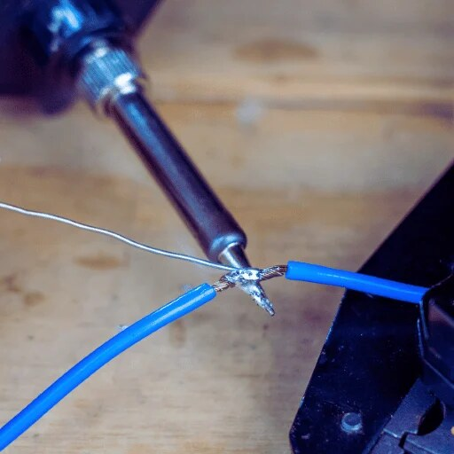
Rosin-core solder wire, 0.6–0.8 mm. The flux inside is what makes the smoke.
Unroll about 10 cm at a time so your hand stays away from the tip
Feed it to the joint, not to the iron
Tip care
Brass tip cleaner
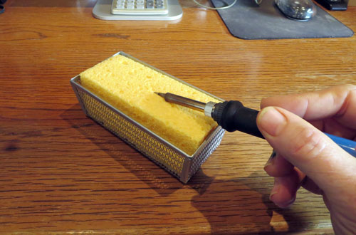
Brass wool cleans the tip without cooling it. Wipe the tip, then re-tin it with a touch of fresh solder.
A shiny silver tip moves heat. A black tip does not.
Leave a little solder on the tip when you put it away. This is called tinning.
Safety
Fume extractor
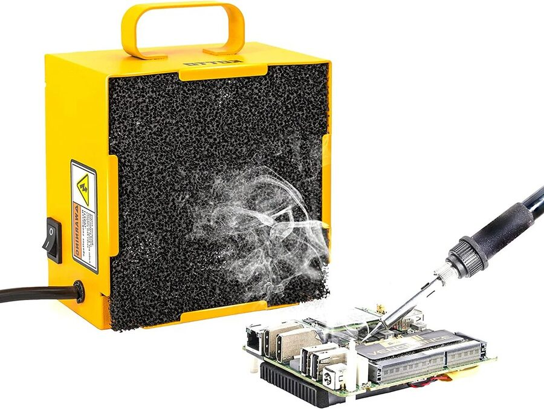
A fume extractor only works when it is close to the joint. Move it with the work.
Aim the smoke away from your face and toward the filter
Holding
Helping hands / board vise
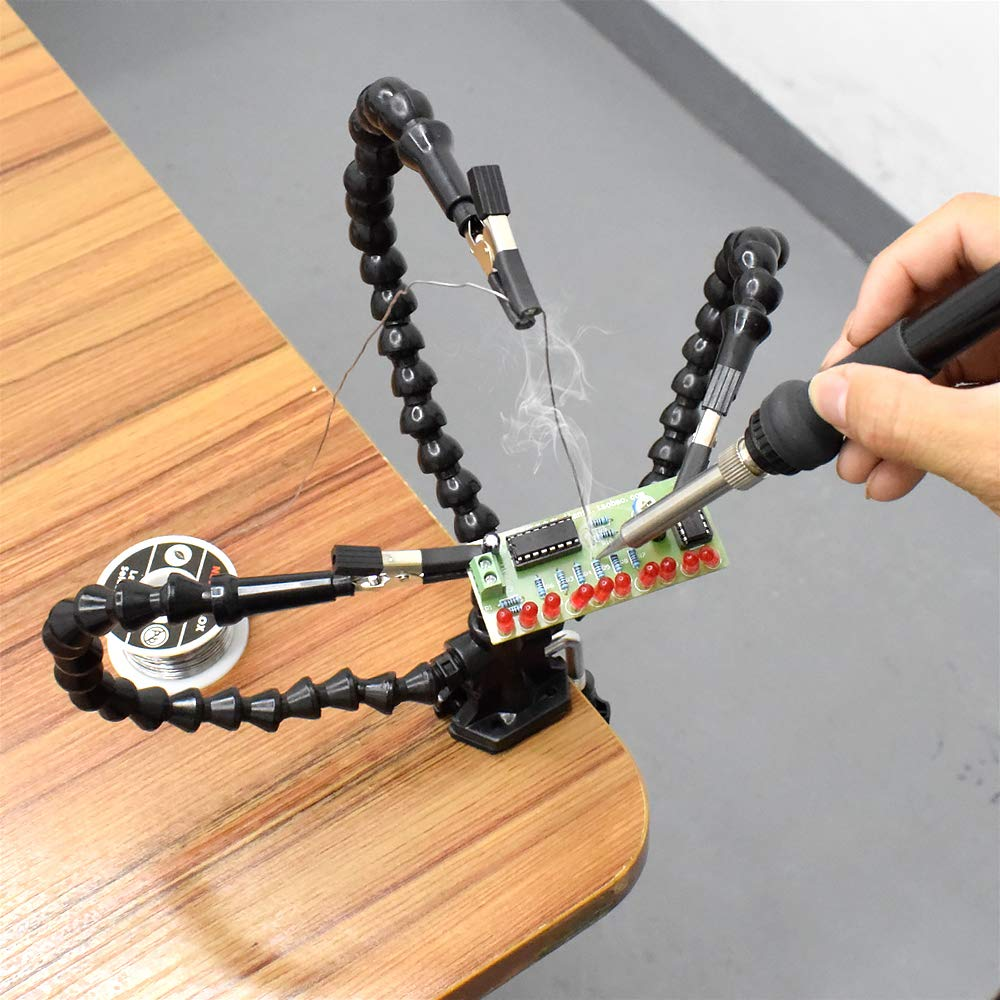
Clamp the board so both of your hands are free: one for the iron and one for the solder.
A board that stays still while cooling gives a smooth joint
Finish & fix
Flush cutters, wick, pump, meter
Flush cutters trim leads. Cover the lead with your hand when you cut so it does not fly.
Solder wick (copper braid) soaks up extra solder
Solder pump sucks up molten solder to free a lead
Multimeter checks continuity with the power off
Part 4 · The routine
The Five-Beat Joint
Every through-hole joint follows the same rhythm. Say the beats out loud for your first ten joints. The whole joint takes about 3–5 seconds of heat.
1HeatPut the tip so it touches the pad and the lead together. Count 1–2.
2FeedTouch solder to the far side of the joint, opposite the iron. It should melt and flow in.
3Solder offOnce there is a small cone, pull the wire away first.
4Iron offLift the iron straight up about a second later.
5Hold stillDo not bump or blow on it for a few seconds while it hardens.
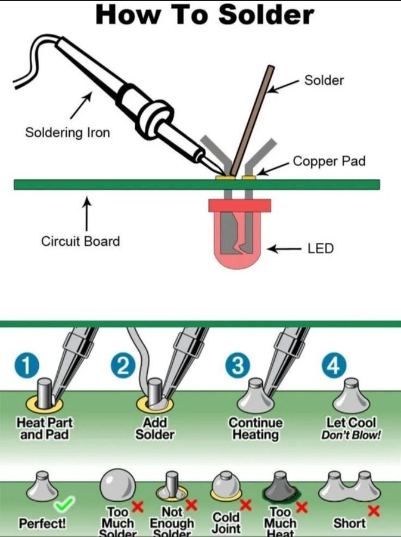
Heat the pad and the lead together, feed solder into the heated joint, then let it cool without moving. The iron and the solder come from opposite sides.
Before the first joint
Tin the tip. When the iron reaches temperature, melt a little solder onto the tip, wipe it in the brass, and re-tin it. It should look shiny silver.
Place the part. Push the lead through the hole from the printed side. Bend the lead outward about 30° underneath so it stays put when you flip the board.
Clamp the board with the solder side facing up toward you.
After the joint
Look at it under light. Use the joint gallery below to judge it.
Trim the lead just above the top of the cone. Cover it with your hand when you cut.
Wipe and re-tin the tip, then put the iron back in its stand.
The two habits that cause most bad joints
1. Melting solder on the iron tip and then dabbing it onto the joint. The flux burns off on the way, and the solder lands on cold metal.
2. Fixing a bad joint by adding more solder on top. Reheat it instead. Add a little flux if the joint looks dull.
Part 5 · Practice before the real iron
Virtual Practice Bench
Try the five beats here before you pick up a real iron. Hold the buttons, or hold the H and F keys. The simulation tracks the joint temperature, how much flux is left, and how much solder went in, then grades the joint. Try making a bad joint on purpose so you can see what causes it.
Tip is dull. Tin the tip, then heat the joint.
Joint temp
Solder in joint
Flux left
Tip condition
Good joints: 0 / 0
Bench challenges
Make three good joints in a row on the small pad.
Make a cold joint on purpose. What exactly did you do?
Switch to the ground-plane pad and keep the iron at 350 °C. What changes? Now try 300 °C.
Try a joint with the tip left dull. How much longer does it take to heat?
Hold the iron on for 10+ seconds at 420 °C. What happens to the flux, and then to the pad?
Part 6 · Read the joint
Joint Gallery: What Went Wrong?
A joint's shape shows how it was made. Click any diagram to show it large for the class. Each caption gives the cause and the fix.
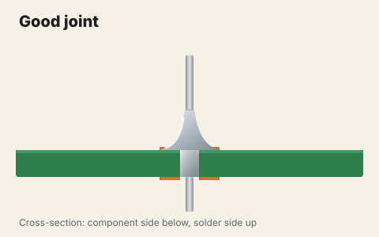
Good joint. A smooth, concave cone (a fillet) from the pad up the lead. The solder has wetted both metals and filled the hole. Trim the lead and move on.
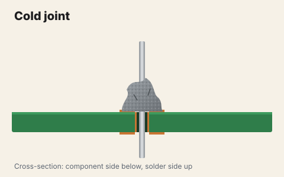
Cold or disturbed joint. Grainy, lumpy, dull grey, and sometimes cracked. Either the joint was too cool or it moved while hardening. Fix: add a little flux and reheat until it flows, then hold it still.
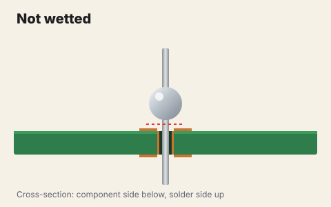
Not wetted (balled up). The solder beads on the lead and never bonds to the pad. The pad was cold or oxidized. Fix: clean it, add flux, and heat the pad as well as the lead.
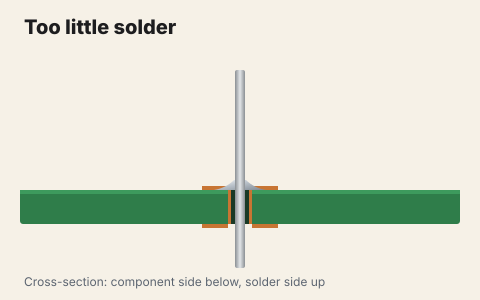
Too little solder. A thin ring with the hole still showing. It may work today and crack later. Fix: reheat and feed a little more solder.
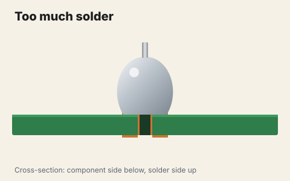
Too much solder. A round ball that hides the lead, so you cannot tell whether it wetted underneath. Fix: remove some with wick, then reflow.
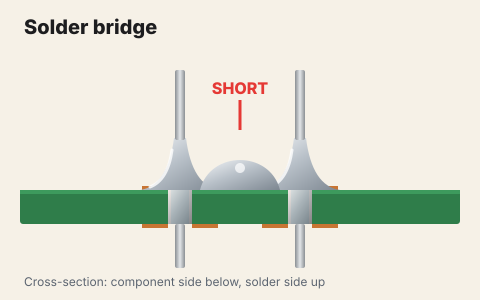
Solder bridge. Solder joins two pads that should be separate. This is a short circuit. Fix: add flux and drag a clean tip between the pads, or use wick. Then check with the meter.
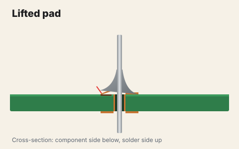
Lifted pad. Too much heat for too long, or prying on the lead, peeled the copper off the board. Stop and call the teacher. This needs a jumper-wire repair.
Name that joint
Get a partner or the whole class to call out the answer before anyone clicks.
Part 7 · Real iron, real joints
Practice Progression
Finish each level and have it checked before you start the next one. Every level ends with an inspection and a meter test, not just "it looks OK."
Level 1
Tin & splice wire
Strip 1 cm from two wires. Tin each end so the strands are coated but still flexible. Twist them in-line, solder, and cover with heat-shrink tubing.
Pass: the joint is smooth and you can see the strand shapes under the solder
Pass: it survives a firm tug test
Pass: the meter beeps end to end
Level 2
Ten joints on a practice board
Solder ten resistors onto perfboard. Then solder a row of header pins, with one pin tacked first so the row sits square.
Pass: 10 of 10 joints are cone-shaped fillets
Pass: there are no bridges between header pins (check each pair with the meter)
Pass: leads are trimmed at the top of the cone
Level 3
Working circuit
Build a small kit such as an LED blinker, a badge, or headers for your Arduino sensor. Check polarity before you solder: the LED's flat side and the diode stripe must match the board.
Pass: no shorts between power and ground (meter check with the power off)
Pass: it works on the first power-up, or you find and fix the fault yourself
Fixing mistakes (rework)
Remove a bridgeAdd flux, then drag a clean, tinned tip away from the bridge. Surface tension pulls the solder back onto the two pads.
Solder wickLay the braid on the joint and press the iron on top of it. The solder is pulled up into the copper. Lift the wick and the iron together so the wick does not stick to the joint.
Solder pumpCock the pump, melt the joint, put the nozzle next to it, and fire. This is best for freeing a through-hole lead.
Know when to stopEach time you reheat a joint, the pad weakens. After two tries, stop and ask for help before the pad lifts.
Test with the power off
Test It: Continuity and Bridges
A joint can look fine and still be open inside, and a tiny bridge can be hard to see. With the power disconnected, use the meter's continuity mode (the beep) to check two things. First, every connection that should exist does. Second, power and ground are not connected. Use the bench below to practice.
When Not to Solder
Soldering makes a connection permanent. Sometimes you want a connection you can change later.
Situation
Better choice
Why
Still testing the circuit idea
Breadboard
No heat, and you can change it in seconds. Get it working first, then solder.
Final build that will be carried around
Solder
It survives vibration and has the lowest resistance
Modules that get swapped out
Headers + Dupont/JST connectors
You can unplug them without reheating anything
Power wires in an enclosure
Screw terminals or lever clamps
Strong, easy to inspect, and easy to replace
Wearables and e-textiles
Conductive thread, snaps
They bend and can be washed, and there is no hard joint on the fabric
Solder License: Sign-off Rubric
You earn independent bench time when you show each skill at the "Licensed" level while a teacher watches.
Skill
Not yet
Almost
Licensed
Safety
Iron is set down outside the stand, or glasses are off
Follows rules with reminders
Checks the station without prompting, and the iron is always in the stand
Tip care
Tip is black or dry
Cleans the tip but forgets to re-tin
Tip stays shiny all session and is tinned before storage
Technique
Melts solder on the tip and dabs it on
Heats the joint but feeds too early or too much
Follows the five beats, with 3–5 s of heat per joint
Inspection
Cannot tell good joints from bad ones
Spots bridges but misses cold joints
Names every defect in the gallery and its fix
Testing
Powers up without checking
Checks continuity with a reminder
Checks power-to-ground for shorts before every first power-up
Quick Check
1. Where should you touch the solder wire during a through-hole joint?
2. A joint looks dull, grainy, and lumpy. What is it and what do you do?
3. What is flux for?
4. One pad will not melt the solder even after several seconds. It is connected to a big copper ground area. What is the best fix?
5. Solder is connecting two pins next to each other that should be separate. What is it called, and what do you do?
6. Your partner asks you to pass the iron. What do you do?
7. You finished your kit. What do you check before you connect power?